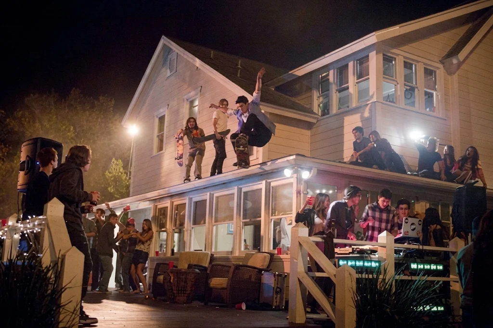
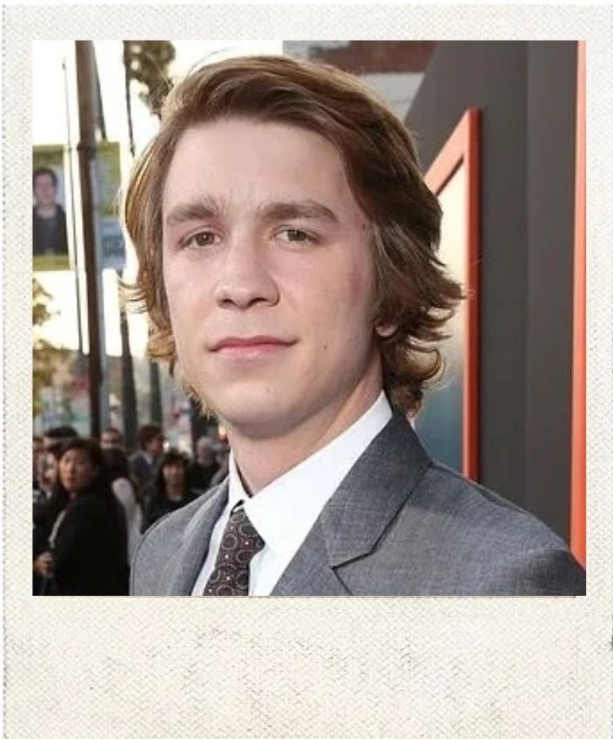
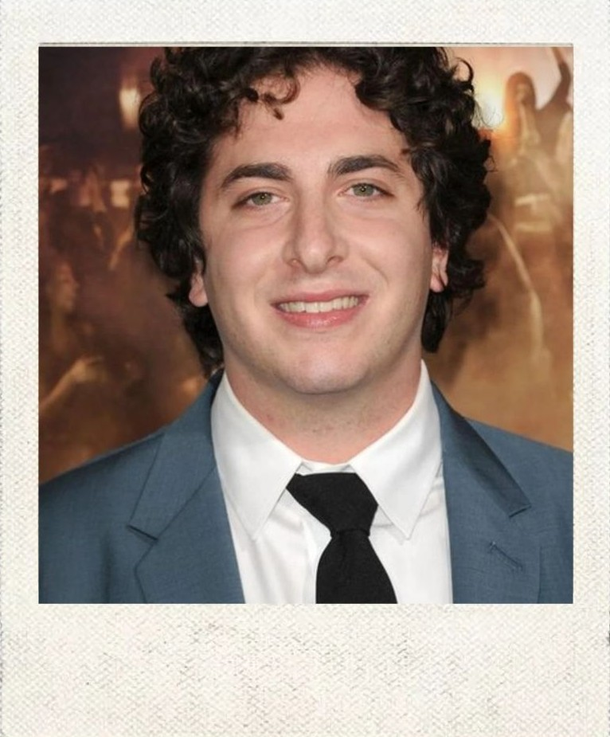

PERSONAJES

La casa de Thomas es el lugar donde comienza la fiesta y donde se desarrolla prácticamente todo el caos de la película. Lo que empieza como una celebración pequeña termina convirtiendo la casa en el centro de una fiesta multitudinaria y completamente descontrolada.

